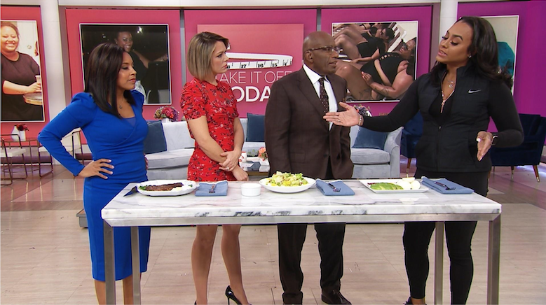
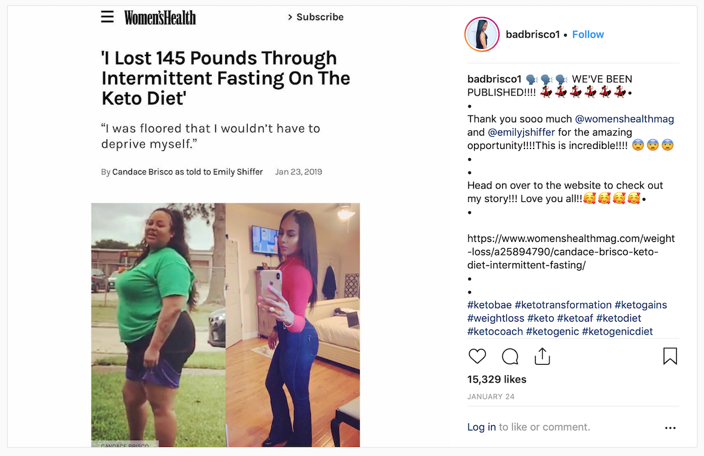
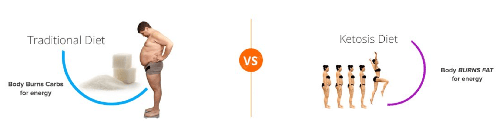
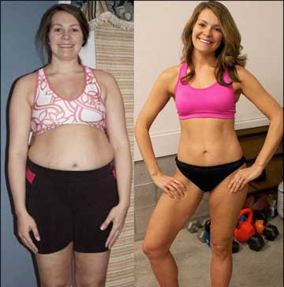
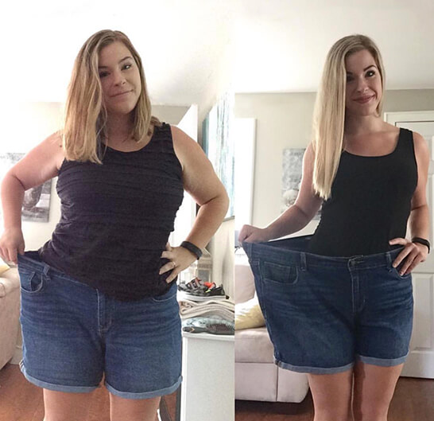

I lost 145 POUNDS and ONLY PAID $4.95. New No-Exercise Regiment Melted Belly Fat As Shown on Today Show, Read Proof Below1
(ET, ) - It was the one of the most watched episodes in Today Show history when sisters Candice won over the the Today Show panel.
Never before had the TODAY morning show panel unanimously decided to bring Candace in about a success story based on our Keto diet until Now.
“WOW, what does it feel like” Al Roker and crew ask. Candace with the help of Keto Slim 7 “Incredible, the best I’ve ever felt in my life ever. I’m so grateful to being able to share this with everyone. I have never been this small before due to work demands, family and just life over all. Keto Slim 7 just sped everything up.
Al Roker has continued to defend Keto after slamming trainer Jillian Michaels for speaking out against the high-fat, low-carbohydrate eating plan for claiming it was not effective after using it himself to lose 40 pounds himself.
“The 64-year-old anchor explained why he and many others follow the diet while chatting with his co-stars Dylan Dreyer and Craig Melvin on the Today show Friday, just one day after hit back at the former Biggest Loser trainer on Twitter explaining what it's done for people’s health, confidence and just being pain-free after carrying a lot less weight.
'My point is, what works for you, works for you,' he said. 'There's science on both sides that says it's not only a great idea and science co-signs with the Keto'.2
 Results May VarySince filming the show-stopping episode, Candace has been hard at work putting the advice of their mentors into play as you can see across her instagram.3
“I completely re-branded my Keto movement and came up with this new product called Ketosis Diet,” said Candace. Recently unveiled the product that has sparked a movement across America with women everywhere losing weight long before summer begins.
“The product we displayed on the show has been branded as Keto Slim 7 Keto. It’s the original formula, all I’ve done with my body has been through this groundbreaking weight loss supplement that helped me drop weight.” explained Candace. said Anna.
When product launched for sale through their company Today Show website and say they sold out within 5 minutes. Today Show Comments “we even made sure we had more product than we thought we could sell, but all of it sold out within five minutes!” exclaimed Samantha Guthrie.
While the Today Show host are excited about their smart move, women around are flocking online to purchase Keto Slim 7 Keto and say the results have been life-changing.
Clinical trials have uncovered that women who use Keto Slim 7 Keto were able to drastically reduce fat, and with continued use, prevented weight gain from recurring even long term4
“Candace was the first guest on Today Show history to receive such positive feedback from others who have bought this Keto Slim 7 Keto..
 Results May Vary
Results May VaryHow does it work?
The Keto Diet has been shown to produce beneficial metabolic changes in the short-term. Along with weight loss, overall health associated with losing excess weight have improved, such as high blood pressure, and elevated cholesterol and triglycerides. There is also growing interest in the use of low-carbohydrate diets, including the Keto Diet. Several theories exist as to why the Keto Diet promotes weight loss:
Keto Slim 7 Keto decreased food cravings due to the high-fat content of the diet.
Keto Slim 7 Keto decrease appetite-stimulating hormones, such as ghrelin, when eating restricted amounts of carbohydrate.
Keto Slim 7 Keto is a direct hunger-reducing role of ketone bodies—the body’s main fuel source on the diet.
Keto Slim 7 Keto Increased calorie burn due to the metabolic changes by converting fat and protein to glucose.
Keto Slim 7 Keto Promotion of fat loss on lean body mass.5
How to lose weight quickly with Keto Slim 7 Keto?
1. Appetite control
When attempting to lose weight, getting a grip on your eating habit is an important angle when it comes to the effectiveness of your regime.
Emotional eaters face a torrid spell in trying to curb their eating habits. This is where Keto Slim 7 comes in. It helps to control your eating habits by stimulating the production of enzymes that suppress cravings for some specific types of foods. The chemical serotonin also helps to correct emotional imbalances that cause you to consume food due to escalating emotional situations.
2. Prevention of the formation of fat
Finding a way to control the conversion of the energy in your body into fats is the key to controlling a burgeoning waistline. Keto Slim 7 suppresses the ability of the liver to convert energy into fat and diverts the necessary calories to efforts of building up a lean body with healthy muscles.
3. Well being
Many individuals will use food as an attempt to escape feelings of stress and depression. The BHB extract has compounds that lift your mood and improve your general wellbeing, reducing the likelihood of you slipping into stress and crash feeding tendencies.
The BHB contained in Keto Slim 7 has been under study for over a decade now. It provides an effective natural remedy to the problem of weight loss and comes at an affordable price. However, some classes of individuals could experience potential negative effects, for example pregnant women. Check with your doctor to get a go ahead before deciding to use the product. To lose weight quickly with Keto Plus, you must use it at the correct intervals and in the appropriate amounts.
Results May Vary
“My weight loss was never about pleasing society. Yours shouldn’t be either. It’s about health, it’s about keeping up with our kids, it’s about longevity. So stay sexy out there, but strive for health!” Jenna Jameson. 6
Results May Vary
So the million-dollar question: "Al, how much weight have you lost on the keto diet?" "I’ve lost about 40 pounds,” Al replied, noting that his cholesterol levels are healthy, too.” Thanks to adding Keto to his life Al Roker. 7
GIVE YOURSELF THE STAR TREATMENT
For a limited time, Candace is offering you a risk-free trial of Keto Slim 7 to celebrate the hard work on Today Show.
Once you place your order through our exclusive link, the magic bottle will then be delivered straight to your door and ready to use immediately.
Remember it’s important that you use Keto Slim 7 daily to achieve the full fat-burning results.
This offer won’t last for long so make sure you follow the link below to claim your risk-free trial!
Sponsored Content Provided By Keto Slim 7
READER RESULTS
 Results May Vary
Results May Vary"I've been trying to get rid of my belly fat for almost the whole puberty. Keto Slim 7 got rid of them in a month. Thanks so much!"
Jessica S.
Austin, TX
BEFORE & AFTER
 Results May Vary"For the first time in forever I am finally happy when I look in the mirror every morning. I haven't felt this confident in decades!"
Tiffany C.
Philadelphia, PA
Special Offer

BEFORE & AFTER
 Results May Vary
Results May Vary"Thank God I didn't go through with that barre membership... I got the same results, for less than a cup of coffee!"
Christina Novotney
Seattle, WA
BEFORE & AFTER
 Results May Vary"Ive only been using Keto Slim 7 for 2 weeks, and I love it!!!!!!!! I have seen a visible change in my body, best of all my husband complimented me on my shape after just 2 weeks!!!!! He thought I had liposuction, and I did'nt that is just fabulous!!!!!!!!"
Carol Keeton
Denver, CO
BEFORE & AFTER
Results May Vary"I have been using Keto Slim 7 and I am incredibly impressed with the results! My belly is flatter and it is very apparent that my skin is more compact."
Briana Smith
Houston, TX
BEFORE & AFTER
 Results May Vary
Results May Vary"YES!! Finally, I have found a weight loss product that works. At 48 years old this is the first time I've had products that work for me."
Angie Clayton
Miami, FL

(PROMOTIONAL PRICING FOR A LIMITED TIME ONLY - CLAIM YOURS NOW BEFORE THEY'RE ALL GONE)
IMPORTANT: During clinical testing it was proven that you MUST use this product DAILY to achieve similar results.
 Update: Only 4 Bottles Still Available.
Risk-Free Trial Promotion Ends:
Update: Only 4 Bottles Still Available.
Risk-Free Trial Promotion Ends:

© 2019 Copyright. All Rights reserved.